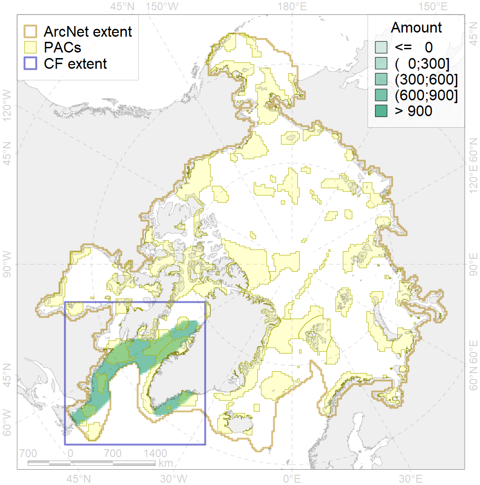
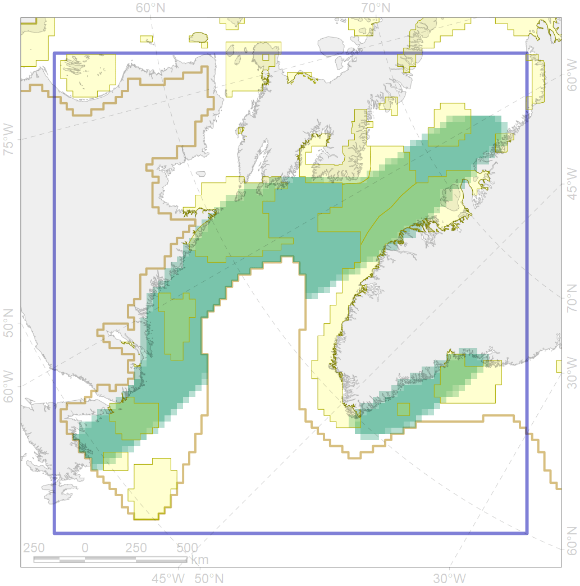

6034

| CF code | 6034 |
| CF name | Ivory gull (Pagophila eburnea) Atlantic wintering grounds |
| Time Period | 1990-2009 |
| Source(s) | Gilg et al 2010 |
| Seasonality | November-March |
| Depth Horizon | >0 m |
| Methodology | Field Data |
| Use Restrictions | Open source |
| Author Name | Gavrilo, Tertitski |
| Notes | |
| Scenario’s Target | 0.216 |
| Target Achievement | 0.431 (Scenario: 199.4%) |
| PAC | Share of the Total Amount within the PAC | Share of the Target Achievement for the ArcNet | PAC’s Contribution to the Target Achievement |
|---|---|---|---|
| 42 | 2.4%2.5% | 9.7%9.7% | 4.9%4.9% |
| 43 | 0.4% | 1.6% | 0.8% |
| 44 | 8.5%10.2% | 37.4%43.2% | 18.8%21.6% |
| 45 | 9.7%10.7% | 42.7%46.7% | 21.4%23.4% |
| 46 | 0.3%0.8% | 1.2%3.1% | 0.6%1.6% |
| 47 | 2.1% | 9.1% | 4.6% |
| 48 | 0.2%0.2% | 0.6%0.6% | 0.3%0.3% |
| 76 | 10.8%10.9% | 48.2%48.3% | 24.2%24.2% |
| 77 | 4.3% | 17.9% | 9.0% |
| 79 | 3.9%4.1% | 14.8%14.9% | 7.4%7.5% |
| 80 | 0.2%0.2% | 1.0%1.0% | 0.5%0.5% |
| inner | 42.9%46.3% | 184.1%196.0% | 92.3%98.3% |
| outer | 57.1%59.3% | 15.3%22.6% | 7.7%11.3% |
| † supplement values are for area consistence whereas principal values are for Accenter compatible gridded stats |